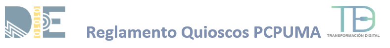

Reglamento Quioscos PC Puma

El presente reglamento tiene como objetivo regular el préstamo y uso de los servicios de los Quioscos PC PUMA que se proporcionan a la comunidad de la Facultad de Ingeniería.
Ubicación de los Quioscos PC PUMA
- Quiosco E - Ubicado en el edificio E junto a la librería (zona norte)
- Quiosco I - Ubicado en la planta baja del edificio I (Zona sur)
- Quiosco M - Ubicado atrás del Auditorio Sotero Prieto en el Mural (Zona sur)
- Quiosco T - Ubicado en el primer piso, a un lado de sala IBM.
Horario: El servicio está disponible de las 9:00 a las 20:00 horas, de lunes a viernes.
Los servicios que se proporcionan son:
- Préstamo de PC o Laptop.
- Espacio de trabajo.
- impresión de documentos.
De los usuarios Quioscos PC PUMA
1. Son usuarios:
- Los alumnos inscritos en cualquiera de las 15 carreras de ingeniería y Posgrados de Ingeniería.
- Personal académico y administrativo en activo, adscritos a la Facultad de Ingeniería.
- Alumnos de intercambio previamente registrados en Secretaria Académica de la Facultad de Ingeniería.
2. Pueden solicitar servicios:
a) Para uso de Laptop: Se deberá registrarse por única ocasión en el sistema de préstamo PC PUMA en la siguiente dirección:
https://modulospcpuma.unam.mx/
Con su número de cuenta o trabajador, y seleccionando la opción de Facultad de Ingeniería.
b) Para uso de PC y espacios dentro de los Quioscos PC Puma: Deberán registrarse con su Credencial alumno o trabajador de la Facultad en control de usuarios en la entrada de los Quioscos únicamente una sola vez.
c) Con el registro se está aceptando el reglamento de servicio y las indicaciones que este contenga.
03. De los equipos o servicios:
- El préstamo individual está disponible para todos los usuarios descritos en el numeral 1 de este reglamento.
- El servicio podrá ser suspendido por causas de fuerza mayor o por mantenimiento.
- El préstamo de PC o Laptop tiene una duración de 2 horas, y se puede renovar dependiendo de la demanda.
- Los equipos únicamente serán prestados dentro de los Quioscos PC PUMA.
- El préstamo es personal e intransferible, por lo que es usuario es el único responsable del equipo.
Disposiciones generales:
- El uso de los servicios y equipos en los Quioscos PC PUMA es única y exclusivamente para ACTIVIDADES ACADÉMICAS, por lo que queda estrictamente prohibido: el uso recreativo y de esparcimiento, la instalación de software o modificaciones en la configuración de los equipos.
- Queda prohibido ingresar y consumir bebidas dentro de los espacios trabajo, en los Quioscos PC PUMA.
- No se deberán consumir alimentos dentro de los espacios de trabajo de los Quioscos PC PUMA.
- No está permitido provocar desorden dentro de las salas, hablar con palabras altisonantes, cambiarse de equipo sin avisar al área de Control de Quiosco.
- Si un usuario detecta algún desperfecto en el equipo favor de reportarlo al área de Control de Quiosco.
- Queda prohibido gritar o hacer ruido excesivo dentro de los espacios trabajo.
- No está permitido andar paseando por las salas.
- Si un usuario provoca un desperfecto, deliberadamente o por desconocimiento, será sancionado.
- Queda absolutamente prohibido ejecutar cualquier ejercicio o actividad que por su naturaleza pudiera atentar contra la seguridad de los equipos y servicios de red, aunque tales actividades tuvieran carácter académico.
- Es responsabilidad del alumno cerrar sus cuentas de correo, WhatsApp, Facebook, Instagram, etc. Ya que los equipos son de uso común, para evitar el uso indebido de la información personal de cada alumno.
- Toda aquella persona que, por dolo, negligencia o desconocimiento, destruya o dañe el equipo que le fue prestado, deberá reponer o pagar el equipo dañado.
- En caso de cualquier acto de agresión física y/o verbal, el agresor será remitido ante las autoridades universitarias correspondientes.
- El Usuario de servicio está obligado a respetar y cuidar el mobiliario y/o el equipo que le es asignado, ya que son de uso común.
- En caso de requerir algún servicio que no está contemplado en esté reglamento, por favor pregunta en Control de Salas.
- Favor de mantener el orden y limpieza dentro las áreas de trabajo de los Quioscos, ya que a todos nos beneficia al desarrollar nuestras tareas y/o Proyectos.
SANCIONES
Las sanciones para el uso de Laptop están establecidas en el reglamento general de PC Puma de la UNAM.
https://pcpuma.unam.mx/archivos/Anexo3_Recomendaciones_Operacion_Prestamo.pdf
La devolución del dispositivo en el plazo establecido para el préstamo, con daño o alteraciones físicas en estética, o partes (pantalla, teclado, interfaces) se sancionará con suspensión temporal o definitiva del servicio, dependiendo de la gravedad del daño consistentes o equiparables al siguiente listado:
|
a. Rayones en la pantalla b. Pantalla estrellada c. Teclas faltantes d. Teclas dañadas e. Derrame de líquido sobre el teclado f. Trackpad dañado g. Puertos USB o tipo c dañados h. Puerto HDMI/VGA dañado i. Rayones en la carcasa |
j. Manchas de suciedad en el equipo
k. Etiquetas de inventario o PC PUMA removida l. Equipo abierto sin autorización (dispositivo desarmado) m. Faltan tornillos n. Falta hardware o. Cambio de piezas p. Daños por impacto q. Mancha permanente en carcasa(pintura) r. Sin carcasa protectora |
En caso de pérdida total del dispositivo imputable a la persona, ésta deberá reponer el dispositivo con otro exactamente igual o, en su defecto, con otro de semejantes características, con lo dispuesto en el Manual sobre Donaciones en Especie de la Universidad Nacional Autónoma de México.
- Las sanciones para el préstamo de PC y espacios colaborativos están definidas en el Sistema de Servicios de Cómputo de Control de los Quioscos PC PUMA de la Facultad de Ingeniería.
- Los puntos no tratados en el presente documento quedan a consideración del Jefe del Departamento de Transformación Digital y/o el responsable de los Quioscos PC PUMA.